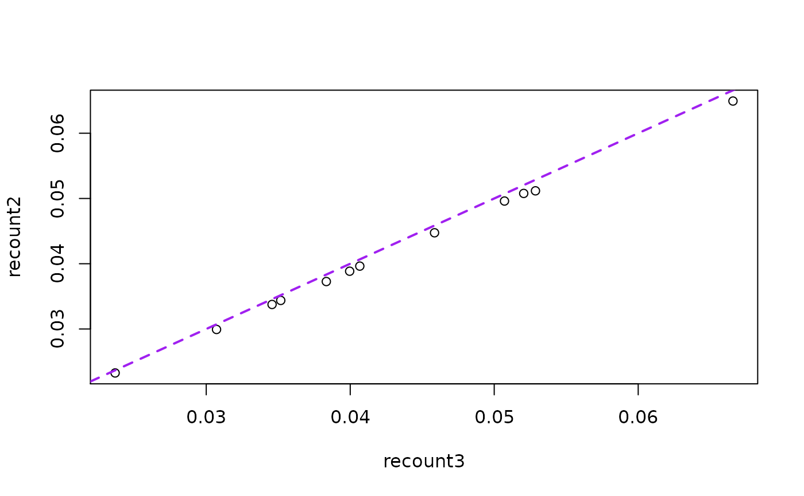

This function computes the count scaling factors used by
transform_counts(). This function is similar to
recount::scale_counts(factor_only = TRUE), but it is more general.
compute_scale_factors(
x,
by = c("auc", "mapped_reads"),
targetSize = 4e+07,
L = 100,
auc = "recount_qc.bc_auc.all_reads_all_bases",
avg_mapped_read_length = "recount_qc.star.average_mapped_length",
mapped_reads = "recount_qc.star.all_mapped_reads",
paired_end = is_paired_end(x, avg_mapped_read_length)
)Either a
RangedSummarizedExperiment-class
created by create_rse() or the sample metadata created by
read_metadata().
Either auc or mapped_reads. If set to auc it
will compute the scaling factor by the total coverage of the sample. That is,
the area under the curve (AUC) of the coverage. If set to mapped_reads it
will scale the counts by the number of mapped reads (in the QC annotation),
whether the library was paired-end or not, and the desired read length (L).
A numeric(1) specifying the target library size in number
of single end reads.
A integer(1) specifying the target read length. It is only used
when by = 'mapped_reads' since it cancels out in the calculation when
using by = 'auc'.
A character(1) specifying the metadata column
name that contains the area under the coverage (AUC). Note that there are
several possible AUC columns provided in the sample metadata generated
by create_rse().
A character(1) specifying the metdata column
name that contains the average fragment length after aligning. This is
typically twice the average read length for paired-end reads.
A character(1) specifying the metadata column
name that contains the number of mapped reads.
A logical() vector specifying whether each
sample is paired-end or not.
A numeric() with the sample scale factors that are used by
transform_counts().
Other count transformation functions:
compute_read_counts(),
is_paired_end(),
transform_counts()
## Download the metadata for SRP009615, a single-end study
SRP009615_meta <- read_metadata(
metadata_files = file_retrieve(
locate_url(
"SRP009615",
"data_sources/sra",
)
)
)
#> 2022-11-01 21:17:16 caching file sra.sra.SRP009615.MD.gz.
#> 2022-11-01 21:17:16 caching file sra.recount_project.SRP009615.MD.gz.
#> 2022-11-01 21:17:17 caching file sra.recount_qc.SRP009615.MD.gz.
#> 2022-11-01 21:17:17 caching file sra.recount_seq_qc.SRP009615.MD.gz.
#> 2022-11-01 21:17:17 caching file sra.recount_pred.SRP009615.MD.gz.
## Compute the scaling factors
compute_scale_factors(SRP009615_meta, by = "auc")
#> SRR387777 SRR387778 SRR387779 SRR387780 SRR389079 SRR389080 SRR389081
#> 0.03996103 0.03457138 0.03071544 0.03833955 0.02367289 0.03517519 0.05286476
#> SRR389082 SRR389083 SRR389084 SRR389077 SRR389078
#> 0.06658138 0.05071328 0.05204845 0.04585471 0.04066468
compute_scale_factors(SRP009615_meta, by = "mapped_reads")
#> SRR387777 SRR387778 SRR387779 SRR387780 SRR389079 SRR389080 SRR389081
#> 0.11235750 0.09725162 0.08624279 0.10768442 0.06657889 0.09877155 0.14878642
#> SRR389082 SRR389083 SRR389084 SRR389077 SRR389078
#> 0.18697660 0.14237100 0.14600002 0.12904391 0.11425062
## Download the metadata for DRP000499, a paired-end study
DRP000499_meta <- read_metadata(
metadata_files = file_retrieve(
locate_url(
"DRP000499",
"data_sources/sra",
)
)
)
#> 2022-11-01 21:17:17 caching file sra.sra.DRP000499.MD.gz.
#> 2022-11-01 21:17:17 caching file sra.recount_project.DRP000499.MD.gz.
#> 2022-11-01 21:17:17 caching file sra.recount_qc.DRP000499.MD.gz.
#> 2022-11-01 21:17:18 caching file sra.recount_seq_qc.DRP000499.MD.gz.
#> 2022-11-01 21:17:18 caching file sra.recount_pred.DRP000499.MD.gz.
## Compute the scaling factors
compute_scale_factors(DRP000499_meta, by = "auc")
#> DRR001622 DRR001623 DRR001624 DRR001625 DRR001626 DRR001627
#> 0.022680966 0.032187945 0.021844235 Inf 0.034138563 0.022909709
#> DRR001628 DRR001629 DRR001630 DRR001631 DRR001632 DRR001633
#> 0.005089376 0.011296977 0.009467943 0.007160352 0.005208585 0.012453028
#> DRR001634 DRR001635 DRR001636 DRR001637 DRR001638 DRR001639
#> 0.007230697 0.008044157 0.007327219 0.005505240 0.008029237 0.009597381
#> DRR001640 DRR001641 DRR001642
#> 0.013427737 0.014480916 0.010110987
compute_scale_factors(DRP000499_meta, by = "mapped_reads")
#> Warning: is_paired_end(): Looks like some samples failed to align and will return NA.
#> DRR001622 DRR001623 DRR001624 DRR001625 DRR001626 DRR001627
#> 0.029459016 0.042985428 0.028993649 NA 0.045477396 0.030802276
#> DRR001628 DRR001629 DRR001630 DRR001631 DRR001632 DRR001633
#> 0.007368791 0.018508532 0.011344073 0.009351792 0.006493370 0.014206925
#> DRR001634 DRR001635 DRR001636 DRR001637 DRR001638 DRR001639
#> 0.009455928 0.010047395 0.008369215 0.007094889 0.009827127 0.011310495
#> DRR001640 DRR001641 DRR001642
#> 0.015537455 0.016555494 0.012514436
## You can compare the factors against those from recount::scale_counts()
## from the recount2 project which used a different RNA-seq aligner
## If needed, install recount, the R/Bioconductor package for recount2:
# BiocManager::install("recount")
recount2_factors <- recount::scale_counts(
recount::rse_gene_SRP009615,
by = "auc", factor_only = TRUE
)
recount3_factors <- compute_scale_factors(SRP009615_meta, by = "auc")
recount_factors <- data.frame(
recount2 = recount2_factors[order(names(recount2_factors))],
recount3 = recount3_factors[order(names(recount3_factors))]
)
plot(recount2 ~ recount3, data = recount_factors)
abline(a = 0, b = 1, col = "purple", lwd = 2, lty = 2)
